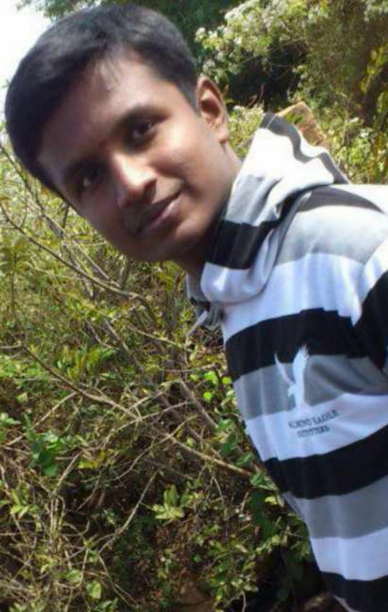

<div class="container">
	<div class="row">
        <div id="speaker-detail" class="col-lg-6 col-lg-offset-3">
            <div class="row">
            	<button title="Close (Esc)" type="button" class="mfp-close">×</button>
                
                <div class="col-md-4 col-lg-4">
                    <br />                    
                    <i class="fa fa-lg fa-facebook-square"></i><a href="https://www.facebook.com/syed.maseehullah1">Facebook</a></br> 					
					<i class="fa fa-lg fa-google-plus-square"></i><a href="https://plus.google.com/118116770258956037789">Google +</a></br> 					
					<i class="fa fa-lg fa-twitter-square"></i><a href="https://twitter.com/syed_jawad1">Twitter</a></br> 								
                </div>
				
				
                    
                <div class="col-md-8 col-lg-8">
                    <h2>Shashikiran</h2>
                    <h3>Coordinator</h3>
                    <p>SHASHI KIRAN M.S.,student of MIT,pursuing Engineering in Electronics and Communication. He did is schooling in St.Matthias and completed his high school and college from Marimallapa institutions. Fascinated by wonders of electronics, he chose to become a engineer under the specialization, ECE. He seems to have managed most of the events, whether be it cultural or technical, becoming one of the best MANAGER. Numismatics counts for his hobbies.</p>
                </div>
            
            </div>
        </div>
    </div>
</div>